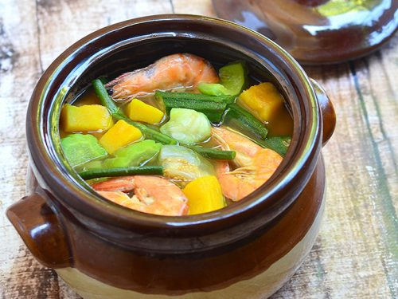

Laswa

Laswa Recipe
This is not my recipe. Check the original source here.
Laswa is essentially a boiled vegetable soup of the most varied, but harmonious set of ingredients.
This actually originated in Iloilo, and it is often compared to another vegetable-filled soup dish called Dinengdeng.
Both use heaps of vegetables to complete the dish. And some versions of Laswa also make use of bagoong.
But Dinengdeng contains less vegetables, and is actually from Ilocos.
Laswa ingredients, meanwhile, rely mainly on the vegetables, themselves to provide the flavor and texture.
Ingredients
- 8 pieces shrimp (cleaned)
- 2 pieces Chinese eggplant (sliced)
- 1.5 cups kalabasa squash (diced)
- 15 pieces string beans cut into 2 inch pieces
- 1 cup saluyot leaves
2 cups alugbati
- 1 cup Amaranth leaves
- 8 pieces okra
- 2 pieces tomato (wedged)
- 1 piece onion (wedged)
- 2 teaspoons bagoong alamang
- 5 cups water
- Salt and ground black pepper to taste
Instructions
- Boil water in a cooking pot.
- Add onion and tomato. Cover and boil for 5 minutes using medium heat.
- Add kalabasa and bagoong alamang. Boil for 5 minutes.
- Add eggplant, string beans, and okra. Cook for 4 to 5 minutes.
- Put shrimp into the pot. Cover and cook for 1 minute.
- Add saluyot, amaranth leaves (kulitis), and alugbati. Stir.
- Season with salt and ground black pepper. Serve with fried fish on the side. Share and enjoy!